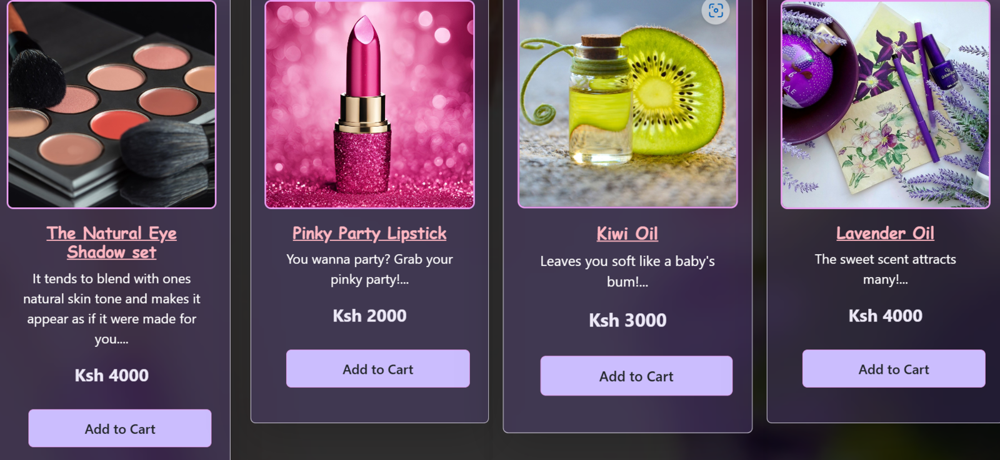
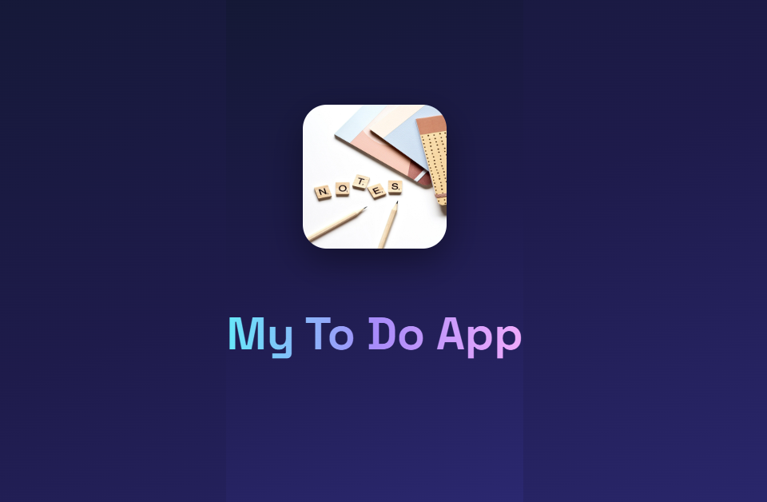
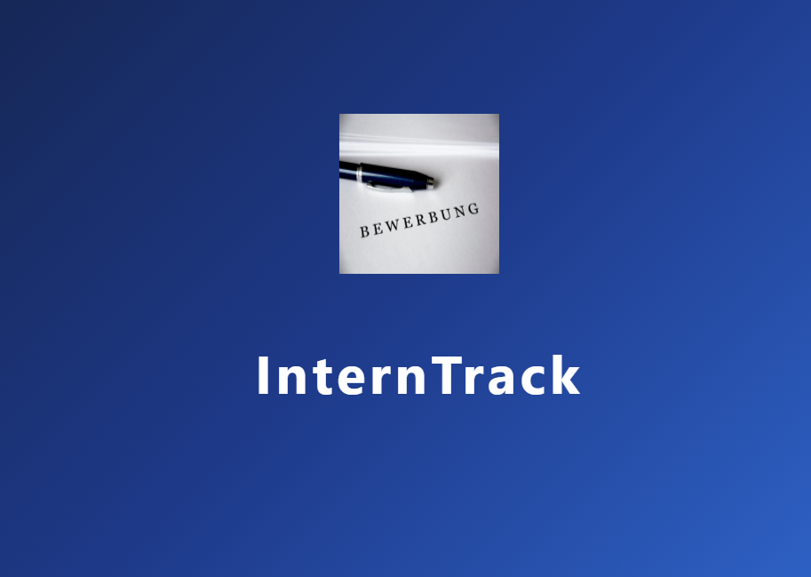

I build modern, responsive and visually engaging web experiences with clean code, structured frontend systems and artistic digital design.
Passionate about technology, UI design, creative coding, music, swimming and combining art with frontend development.
ABOUT ME
I am a creative full stack web developer focused on elegant frontend systems, modern UI experiences and clean responsive web applications.
I enjoy building visually engaging platforms that combine technology, structure and artistic creativity.
I have completed German A1 and I am currently progressing toward A2 while continuing to expand my technical and creative skills.
Beyond coding, I enjoy art, music, swimming and digital aesthetics inspired by cyber design and modern interfaces.
I enjoy designing visually engaging and artistic web experiences.
I focus on clean structure, scalability and polished frontend systems.
I constantly challenge myself to grow technically and creatively.
I pay attention to visual balance, spacing and refined UI details.
MY SKILLS
FEATURED PROJECTS

Responsive beauty ecommerce platform featuring product filtering, cart systems and elegant UI design.
View Project
A clean and responsive task management application that enables users to create, organize, and track daily tasks to improve productivity and workflow management.
View Project
A web-based application developed to streamline internship management by tracking applications, deadlines, and recruitment progress.
View ProjectCONTACT
Email: kimberlygachuhi@gmail.com
GitHub: github.com/yourusername
LinkedIn: linkedin.com/in/yourusername